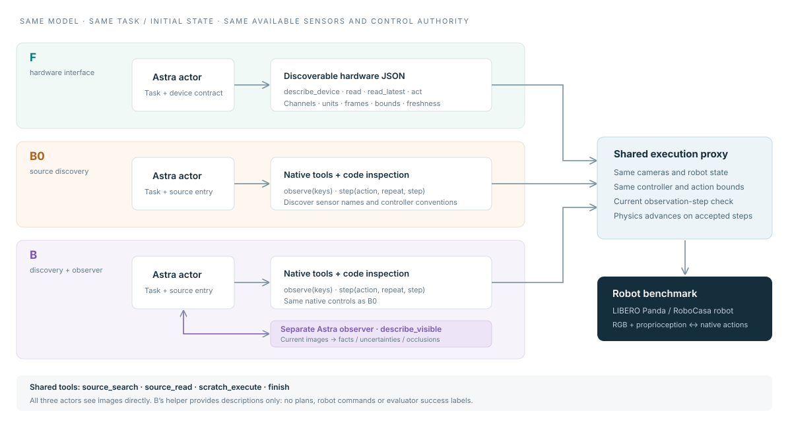
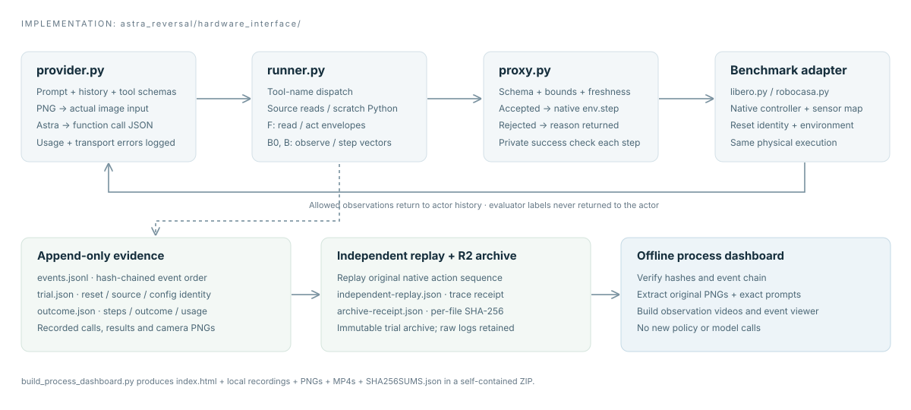

Matched starting states
Only complete groups of the cohort’s assigned methods with matching initial-state hashes, seeds and passing replay receipts. Pilot results are preliminary.
OBSERVE. ACT. CHECK. ADJUST.
The recorded process behind each result: source inspection, camera observations, commands, corrections and observer exchanges.
Only complete groups of the cohort’s assigned methods with matching initial-state hashes, seeds and passing replay receipts. Pilot results are preliminary.
Repeated or cached input contributes to reported token usage. A gripper transition is a navigation marker, not a counted grasp attempt.
SIDE BY SIDE
These are videos of saved camera observations at 3 snapshots per second. Playback condenses inference pauses. Each recording has its own observation cadence; equal video time is not equal simulator time.
| Task / initial state | Method | Outcome | Native steps | Wall time | Reported tokens | Recording |
|---|
ORIGINAL TOOLS & OBSERVATIONS
Scrub through the trial or jump to an observation, gripper change, rejected call or correction. Open an event to inspect its recorded payload.
The video uses the same saved observations shown above. Native step and wall time are burned into each frame. Evaluator start/end snapshots below are additional evidence and were not necessarily shown to the actor.
ACTUAL REQUESTS, NOT A PARAPHRASED RECIPE
The full actor system prompt and tool schemas are taken from the selected trial’s event log. Task, episode identifiers and runtime settings can differ between trials.
Starts with F. Astra can enable available extra robot information, write and revise interface tools, and measure action responses. Revisions and calibration steps are recorded; calibration consumes episode steps.
interface_catalog · define_interface_tool · probe_dynamics · restore_interfaceShared actor instructions plus a typed device description: sensor channels, action units, vector dimensions, frames, limits and freshness requirements.
describe_device · read · read_latest · actShared actor instructions and a robotics source entry point. Astra discovers native observation keys and controller conventions itself.
observe · stepB0’s actor setup plus one sentence introducing a separate visual observer. The observer describes current image evidence only.
observe · step · describe_visibleAll actors get the task instruction, source search/read, a Python scratchpad and finish. They inspect before acting, use bounded commands, verify progress from allowed observations and correct rejected calls. They cannot query hidden simulator state or the evaluator’s success label. All three directly receive camera images.
The current LIBERO cohort has no experiment token or wall-time cap. It retains the 1,000-native-step episode horizon, at most 10 repeated steps per command, provider request limits and scratch isolation.
The helper is stateless per request. It gets current camera inputs, a constrained request (scene, gripper and objects, or occlusion), and a required JSON output. It may not plan, recommend actions, issue commands or judge success.
FROM TASK TO ROBOT COMMAND
One actor model and shared execution checks. The experiment changes how robot capabilities are exposed and whether a visual helper is available.


FROM AN ACTUAL TRIAL
Astra can observe again, change commands, move back or change the gripper command within the same episode. The full sequence is preserved. Gripper transitions help navigation; they are not automatically scored as grasp attempts.
The proxy returns a reason when a call is invalid. The next accepted tool call is marked. It may be a corrected command or another observation; acceptance alone does not prove task recovery.
A transient inference error can resend an unexecuted model request up to three times in this cohort. This does not reset the robot or repeat an already-dispatched action. Actual retry events appear separately when recorded.
TRACEABLE TO THE ARCHIVES
Every exported trial was checked against its archive receipt and append-only event hash chain before this dashboard was built.
Open the JSON recording beside any trial, inspect manifest.json, or verify package files against SHA256SUMS.json. All media and code needed to view the dashboard are in this folder. No network connection is required.